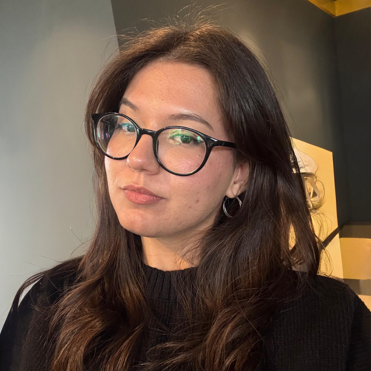

Mehmet Ali Yanmaz
Kurucu
ArcGIS Pro, ArcGIS Online, QGIS ve CBS’de Python otomasyonları üzerine çalışan; mekânsal analiz, lokasyon çözümleri ve veri görselleştirme alanına odaklanan bir CBS araştırmacısı.
Hazal Tuna
Harita Tasarımcısı
Harita estetiği, tipografi ve renk paleti üzerine çalışan; GeoRehber’in görsel kimliğini oluşturan harita tasarımcısı.
İlker Yurdtaş
Editör
İçerik kurgusu, metin düzenleme ve içerik akışı üzerine çalışan; Dijital içerik geliştirme editörü.

Hilal Erol
Uzaktan Algılama Analisti
Uydu görüntüleri, raster veriler ve çevresel değişim değerlendirmeleri üzerine çalışan; Uzaktan algılama temelli bir analist.